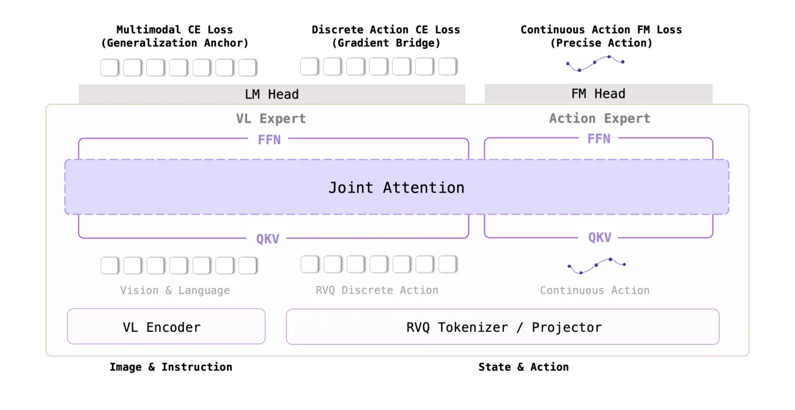
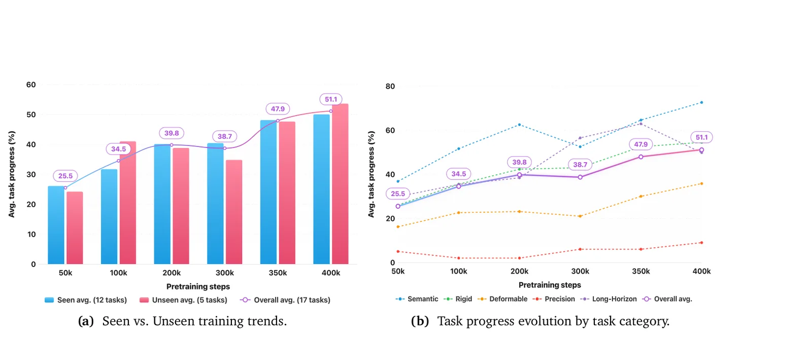
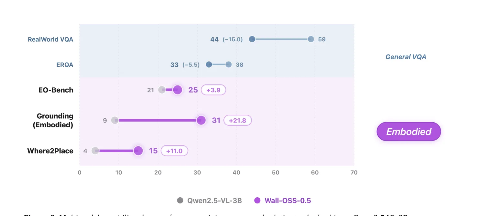

①问题 · 洞察
每条 = 中文论点 · 📍页/节 · 🔤逐字原文(Ctrl-F 锚点) · 🀄译文 · 💡解读。点开原文即可最短路径核对。
观点1 论文要回答一个被领域忽视的真问题：VLA 预训练本身能否直接产出可执行的机器人行为，而不只是更好的初始化。
📍 p.1 · Abstract
does VLA pretraining itself yield executable robot behavior, or does it merely furnish a better initialization for downstream policy learning?
VLA 预训练本身能否产出可执行的机器人行为，还是它只是为下游策略学习提供了更好的初始化？
现有 VLA 的证据"几乎都在任务微调之后"才报告，这个问题一直悬而未决。
📍 p.3 · §1
The pretrained checkpoint is evaluated directly as a real-robot policy, rather than merely as an initialization.
预训练 checkpoint 被直接当作真机策略评估，而非仅当初始化。
论文把这个标准命名为 deployment-oriented VLA pretraining（面向部署的 VLA 预训练）。
观点2 核心洞察：离散动作 CE 才是主导骨干更新的"梯度桥"，flow matching 越过早期后只占约 5%。
📍 p.3 · §1
action-token cross-entropy supplies the gradient bridge: a strong, VLM-native action signal that updates the backbone in a direction aligned with continuous control.
动作-token 交叉熵提供了"梯度桥"：一个强的、VLM 原生的动作信号，沿与连续控制对齐的方向更新骨干。
离散 CE 与 VLM 自回归接口同构，所以对骨干的梯度比 flow matching 更"有力"，且方向与 flow 正相关。
📍 p.5 · §2.2.1
beyond the early training stage its contribution to the VLM-backbone update stabilizes at a small but persistent share of roughly 5%, the dominant backbone updates instead originate from the two cross-entropy losses.
越过早期训练阶段后，flow matching 对 VLM 骨干更新的贡献稳定在约 5% 的小份额，主导更新来自两个交叉熵损失。
这条量化证据是"为何保留端到端梯度、而非用 stop-gradient"的核心依据。
②方法
观点3 配方由三个设计落地：MoT 双专家路由 + Vision-Aligned RVQ tokenizer + Action-Space Supervision；且保持端到端梯度（与 π₀.₅ 的 stop-gradient 路线分野）。

📍 p.3 · §1
separates a VL Expert and an Action Expert at every layer ... gradients still flow end-to-end across both experts, so the split amounts to a routing decomposition rather than gradient isolation ... Action Tokenizer replaces rule-based FAST tokenization ... strengthens flow matching by imposing the loss directly in the raw action space
MoT 骨干在每层分出 VL Expert 与 Action Expert……梯度仍端到端跨两专家流动，所以是"路由分解"而非"梯度隔离"。其二，Vision-Aligned RVQ tokenizer 替代规则化 FAST；其三，Action-Space Supervision 把损失直接施加在原始动作空间以强化 flow matching。
"routing decomposition rather than gradient isolation" 一句直接点明与 π₀.₅ 的区别。
📍 p.6 · §2.2.1
Wall-OSS-0.5 preserves end-to-end gradient flow rather than adopting the stop-gradient design of π0.5
Wall-OSS-0.5 保留端到端梯度流，而非采用 π₀.₅ 的 stop-gradient 设计。
这是与最近邻工作最关键的方法学差异。
观点4 Action-Space Supervision：把损失定义在"恢复出的动作"上（等价 \((1-\tau)^2\) 加权），动机来自机器人动作的频谱结构而非方差。
📍 p.6 · §2.2.2
we retain velocity prediction as the network output but define the loss on the recovered action ... the motivation derives from the spectral structure of robot actions rather than from variance considerations.
我们仍以速度预测为网络输出，但把损失定义在恢复出的动作上……其动机来自机器人动作的频谱结构，而非（扩散模型 x-prediction 的）方差考量。
机器人动作的任务结构集中在低频轨迹形状，高噪声区决定生成上限——故强调高噪声步。5.2 节消融证实它提升收敛速度、峰值与稳定性。
③结果 · 效果
观点5 标志性结果：预训练本身就产生可测量的真机行为——无微调即在 17 任务套件上高分完成多个任务（含一个 held-out 形变任务）。

📍 p.1–2 · Abstract / §1
Before task-specific fine-tuning, the pretrained checkpoint achieves non-trivial zero-shot real-robot behavior, completing several tasks, including a held-out deformable manipulation task, at high task progress on a 17-task suite.
在任务微调之前，预训练 checkpoint 已实现非平凡的 zero-shot 真机行为，在 17 任务套件上高分完成数个任务，含一个 held-out 形变操作任务。
具体数字（p.2）：Block Sorting 100%、Fruit Sorting 96%、Ring Stacking 86%、held-out 形变 Rope Tightening 82%。held-out 也随预训练上升 → 学到可复用能力而非记模板。
观点6 微调后仍是更强先验：15 任务平均 60.5%，超 π₀.₅ 17.5pp、超 DreamZero 27.1pp，10/15 任务最高。
📍 p.14 · §4.2
Wall-OSS-0.5 achieves 60.5% average task progress, outperforming π0.5 (43.0%) by 17.5% and DreamZero (33.4%) by 27.1%, with the highest score on 10 of 15 tasks.
Wall-OSS-0.5 达到 60.5% 平均 task progress，超过 π₀.₅（43.0%）17.5%、超过 DreamZero（33.4%）27.1%，在 15 个任务中 10 个得分最高。
操作子集领先尤其大（如 Color Block 96 vs 42、Drawer Org 52 vs 7）；操作 61.1% vs 35.0%、推理 59.3% vs 58.9% 两个子集同时领先。
观点7 动作训练不损害（反而增强）具身多模态能力：embodied grounding +21.8pp。

📍 p.2 · §1
Multimodal evaluation further reveals stable overall performance alongside a 21.8% gain on embodied grounding, indicating that action training strengthens embodied perception without eroding general vision-language competence.
多模态评估显示整体表现稳定，同时 embodied grounding 提升 21.8%，说明动作训练在不侵蚀通用视觉-语言能力的前提下增强了具身感知。
12M 具身桥(embodied bridge)样本正是为反制 action-token CE 的"专门化"退化压力（代价是通用 VQA 退化 −15.0）。
观点8 工程：CUDA-graph + 融合核使推理 4× 加速，高分辨率下实时 15 Hz。
📍 p.8 · §2.3 Result
Our optimized implementation reaches approximately 21 Hz and 15 Hz at the two resolutions respectively with the standard denoising step T = 10 setting, corresponding to a 4× end-to-end speedup compared to a PyTorch eager-mode baseline.
在标准去噪步 T=10 下，优化实现在两种分辨率(224²/448²)分别约 21 Hz / 15 Hz，相对 PyTorch eager 基线约 4× 端到端加速。
在 RTX 5090、三视角输入测得；高分辨率(448²)区间相对加速最显著。另有 DMuon 把优化器开销 ~100× 缩减。
④开源状态
- 代码
- 开放 github.com/X-Square-Robot/wall-x
- 权重
- 开放 4B checkpoint（见 Project Page x2robot.com/en/oss）
- 数据
- 部分 开源子集可得；自采数据(~60%)与 12M 具身桥未明确公开
📍 p.1 · Abstract footer
Code: https://github.com/X-Square-Robot/wall-x Project Page: https://x2robot.com/en/oss
代码与项目主页地址（论文摘要末尾）。
"open-source 4B VLA" 是其卖点之一；但算力（有效 batch 8192、400k step、多 embodiment）使常规实验室难以 from-scratch 复现。
⑤批判 · 评级
✅ 值得读的理由
- 机制洞察是真增量：不止说 co-training 有效，还量化了"为何"(离散 CE 主导、flow 仅 ~5%)，配受控消融(删任一信号掉 7.4–25.1pp)。
- tokenizer 增益迁移到连续通路：RVQ 较 FAST 真机 +18.9pp，而推理时离散通路被屏蔽——非平凡。
- 对照的是最相关强基线 π₀.₅(+17.5pp)，非稻草人；工程扎实(DMuon、CUDA-graph、实时 15 Hz)且开源。
🔍 主要保留（论文未提）
- 缺"基线预训练 zero-shot"对照：标志性主张只对 Wall-OSS 展示，没给 π₀.₅ 预训练 checkpoint 的同套 zero-shot → 因果归属打折。
- 核心基准自建自标：+21.8pp 的 Embodied Grounding 是内部构造、自行标注，可能偏向自身数据分布。
- 统计弱：每任务仅 10 trials、无方差；checkpoint 间波动大而 400k 恰为峰值。λ=0.01、9:1、"flow 5%" 多为文字断言，无 sweep / 梯度曲线。非同行评审。
评级：Important 非 Breakthrough（重度建立在 π₀.₅ / MoT / RVQ / flow matching 之上，单 embodiment 族、3B 规模），但"梯度桥机制分析"+"预训练即产生行为"的实证重定位是真贡献，加上扎实工程与开源，社区杠杆大。